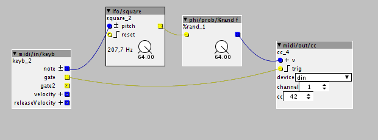

Hello,
I was wondering if there is a patch for sending random midi cc for external machine.
Like for instance, when i trigg a kick on my drummachine, while the randomizer is activate, the pitch of that kick will be random at each trigg ?
thanks

Hello,
I was wondering if there is a patch for sending random midi cc for external machine.
Like for instance, when i trigg a kick on my drummachine, while the randomizer is activate, the pitch of that kick will be random at each trigg ?
thanks
The object "phi/prob/%rand f" will output a random k-rate value when a trigger is received. CC output can be done with "midi/out/cc" (that one also needs a trigger).
To try it out, I'd hook these two up and trigger them with a square LFO. To sync this with your drum machine, you would need to trigger your kick drum from the Axoloti ("midi/out/note") or use an external sequencer ("midi/in/keyb note").
Ok thanks, i tried many combination, and i almost succeeded, i tried with a midi note send from the keyboard of Ableton to the axoloti and send from the axoloti to ableton, so now at each trigger i receive random cc value but the thing is most of the time it receiving the same value, so the best would be to have a random object which makes it possible to get always a different value at each trigg, sorry if it's confuse, do you see what i mean ?
Thanks !! 

HI! Try this patch... When you hit a particular note (E3 in this case), a random cc value is sent to midi out (change to din for your purpose) cc_rand.axp (1.4 KB)
I meant you could use a square LFO as internal trigger if you don't have the means yet to trigger externally. Using both the MIDI input object and the square LFO doesn't make sense.
In general it's helpful to check the output of each object in your patch visually - check out the objects that come up if you type "disp" in the object browser.
Hello, thanks for your help, I just figured out that it was working for trigger short note, but when i want to trigger by pressing and holding a note, it doesnt work, because there is not midi incomming message when the note is holden.
So my question is : can we send midi message when we are holding a note ?
Thanks borututuforte,
Now i'd like to ask if its possible to get the same cc value like it was before to switch on the randomizer when I switch off the midi cc randomiser ?
This is the patch i have now, I added a switch object that i made.
Then I believe you would need to send the CC value from the external machine with midi/in/CC and store it when the randomizer switch is activated and send it back when the switch is deactivated again.
You would use tables to store the CC value and recall it.
Thanks, yes I was thinking about it, but I'm really not familiar with the ""tables" object, i don't know how to use it.
And also, there's no CC incoming value from the external machine until I modify this value (here is the pitch) on the external machine.
Yes, I thought so. I do not know which external synth or gear you are controlling but if its a preset machine, it should output a program change every time you change the preset. this way you have a PC message.
From there, you could write down what the original value of the particular CC you are controlling.
let's say, on preset 01 (PC 01), the pitch value is at 10. You just use a dial object that you point at this value.
then, with a demultiplexer (demux/demux), you can chose to either send the random Cc value or the fixed value from the dial.
Only thing is that with this system, you should write down every value you want to recall from every preset you want to use in your external gear.
What do you mean by PC message ? I don't know what it is
It could be great to have a display to see the CC number and its Value .
A program change message is a midi message sent by or to a synth or gear that mainly recalls a preset.
It depends on the synth, but some outputs a program change message though midi when you select or recall a preset.
You did not mention the drummachine you are using so i do not know if it outputs program changes when you select a preset.
If the external gear you are controlling does not output CC or program change, then I don't see how you can recall the initial CC value before you activated the randomizer.
Ok thanks, i see
my machine is the Roland HPD20
I'm sure it's sending CC value, but not sure about the program change, but i was asking if there's a display which show what CC and PC message we are sending while we manipulating the machine, in order to figure out on which CC or PC I want to interact through the axoloti, Like a midi value Mapping, you see what I mean ?
According to the Midi implementation manual on Roland's website you can chose which CC interact with which parameter.
In the manuel, it is specified that if you enter the midi parameters, you can modify Realtime Modify
Pitch CC# to specifies the control change number that is transmitted when you press the [PITCH] button and turn the realtime modify knob. You can chose any CC.
I encourage you to read and experiment with both the manual and the MIDI implementation chart.
You can use a midi software to monitor the midi values being transmitted on your computer.
Or you can use the object midi/in/monitor to dump the different values in the console of Axoloti patcher.
As for the Program change, it seems that if Program Change Tx (MENU --> SYS --> MIDI --> MIDI) is set
to “ON.”, your HPD20 will output the corresponding program number when a kit is selected.
So if you load KIT 01 and it transmits a program change with the number 01 (it could be any other number), you can use this number to recall a specific value (the value of your pitch on this specific kit) when you switch your randomizer to off.
Don't know if there is a better way, but you should experiment with this kind of logic to establish a custom way of communicating between your HPD20 and Axoloti (both ways).
{kind=link}